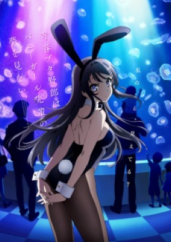
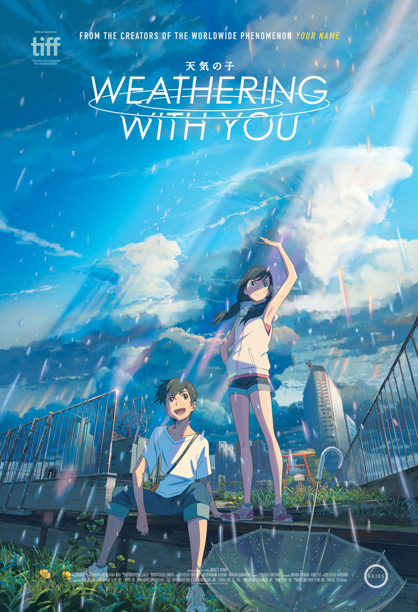
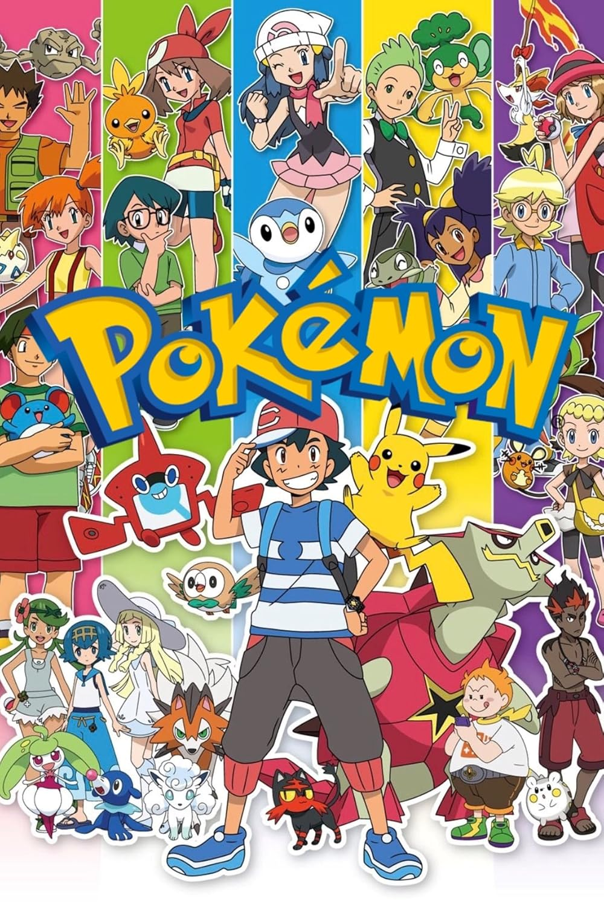

Phim mới thêm

Anime BộSeishun Buta Yarou wa Yumemiru Shoujo no Yume wo Minai
Hội Chứng Tuổi Thanh Xuân

Anime LẻTenki no Ko
Đứa Con Của Thời Tiết

Anime BộPokémon
Bảo Bối Thần Kì
Không tìm thấy kết quả.

Anime BộHội Chứng Tuổi Thanh Xuân

Anime LẻĐứa Con Của Thời Tiết

Anime BộBảo Bối Thần Kì
Không tìm thấy kết quả.